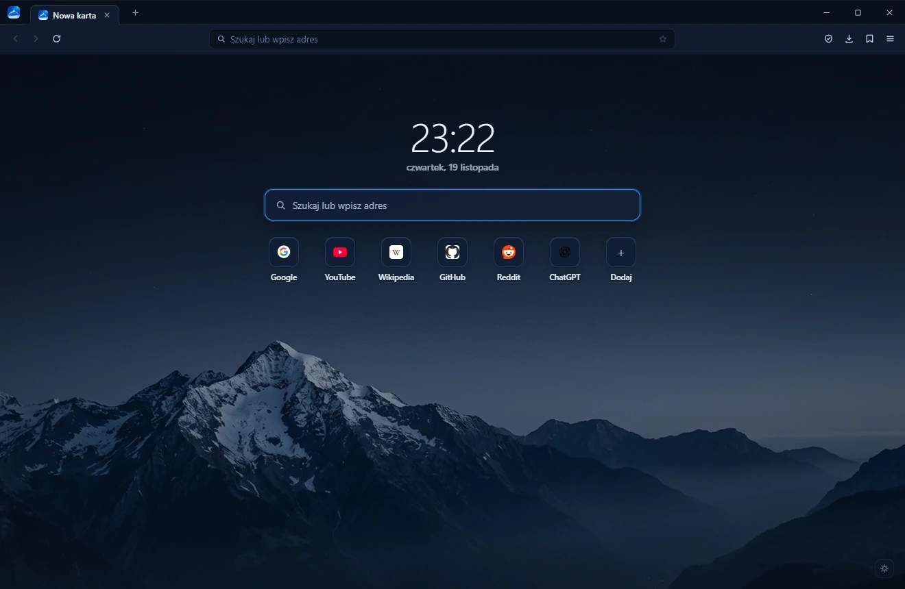
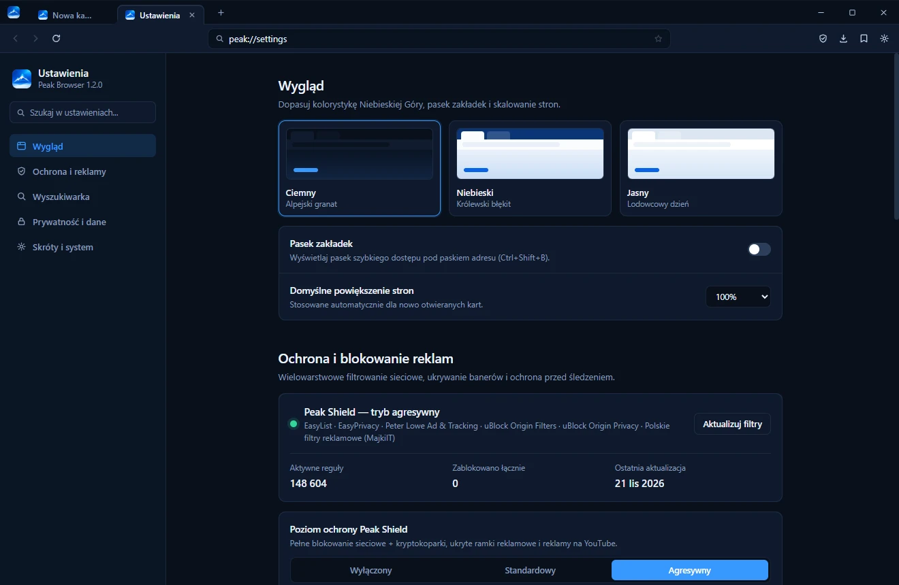
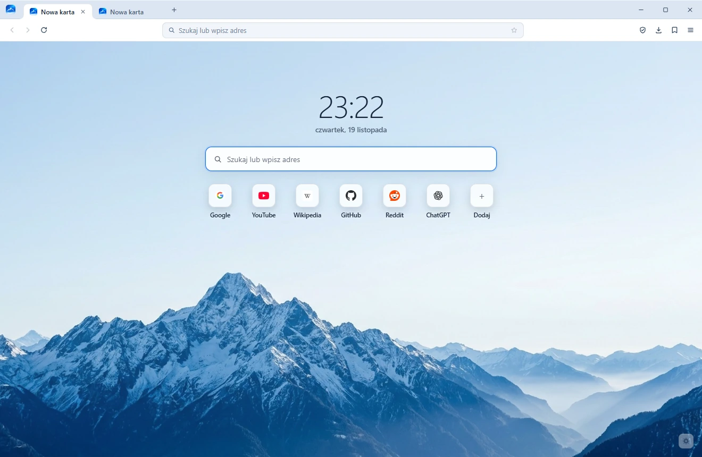

Architektoniczny interfejs
Zwarty górny pasek 78 px, przeciąganie kart, połączona aktywna karta oraz czytelny pasek adresu z wyróżnioną domeną.
Minimalistyczny interfejs z motywem Niebieskiej Góry, wbudowaną ochroną Peak Shield i spokojną przestrzenią roboczą bez zbędnych dodatków.
Brak konta, brak telemetrii · Bezpłatne aktualizacje przez GitHub Releases



Zaprojektowana tak, aby nic nie odciągało uwagi od otwartej strony.
Zwarty górny pasek 78 px, przeciąganie kart, połączona aktywna karta oraz czytelny pasek adresu z wyróżnioną domeną.
Trzy spójne motywy (Jasny, Niebieski, Ciemny) z dedykowanymi tapetami alpejskimi na stronie nowej karty.
Wbudowane blokowanie reklam (EasyList, uBlock, Polskie filtry) z ukrywaniem ramek, ochroną YouTube, HTTPS-First i czyszczeniem parametrów śledzących.
Natychmiastowe podpowiedzi z zakładek i historii, obsługa skrótów klawiszowych oraz szukanie na stronie (Ctrl+F).
Podgląd zablokowanych domen i wyjątki w bocznym panelu 324 px oraz pełnoekranowe ustawienia (Ctrl+,) z podglądem motywów.
Nagłówki Sec-GPC i DNT, blokowanie natrętnych powiadomień push, ochrona urządzeń MIDI/USB oraz granulowane czyszczenie danych.
Nowe wersje pojawiają się automatycznie po publikacji na GitHub Releases.